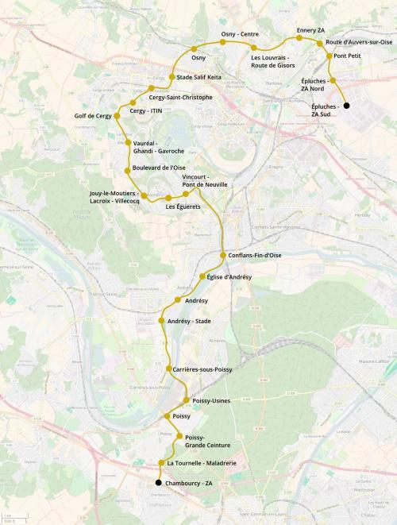

Cergyval 1 Épluches - Chambourcy
Cergyval 1 Épluches - Chambourcy
Épluches - Chambourcy
La création de la ligne 1 du cergyval
La ligne 1 du cergyval est une ligne qui permettrait de connecter la ville nouvelle de Cergy au pôle de Poissy. Elle passerait le long de la vallée de l'Oise dans le secteur récemment urbanisé de Vincourt et desservirait la gare de Conflans-Fin-d'Oise.
Carte

Cliquer pour agrandir
Stations
Si ce projet vous intéresse n'hésitez pas à le (re-)partagez sur les réseaux sociaux ou par courriel ou à en parler autour de vous.
Si vous souhaitez travailler à la concrétisation de ce projet, passez à l'action et contactez nous.
Commenter